All Destinations
Submit a playlist for one of these destinations.
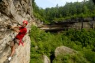
By Mary Reed, photos by Attila Horvath
So you want to be a rock climber but have no skills and no gear? No problem.
By Abby Laub
Often described as Indiana's Appalachian Trail, the craggy Knobstone Trail has its own set of charms.
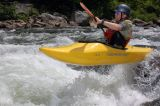
By Mary Reed
You don’t get too many chances at DIY whitewater rafting, and even fewer on a river as fine as southwestern Pennsylvania’s Yough (that’s ‘yawk’ in local parlance), a.k.a.
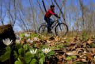
By Mary Reed
Take time this spring to stop and smell the flowers, literally, along the Hockhocking Adena Bikeway, a nearly 20-mile paved path that links Athens and Nelsonville, making its way through the Wayne Nat
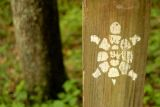
By Mary Reed
If you want to get to know Kentucky, the natural Kentucky of Daniel Boone’s day – that of arches, waterfalls, deep forest and wildlife – take a hike on the 280-mile Sheltowee Trace Trail, which
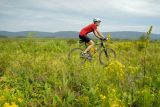
By Mary Reed, photos by Attila Horvath
Canaan Valley National Wildlife Refuge is managed for its plant and animal community – after all, that’s why it’s a wildlife refuge.
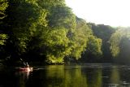
By Mary Reed, photos by Attila Horvath
Dip your paddle into Little Beaver Creek and learn what a Wild and Scenic designation means. Add in easy canoe camping and you’ve got a good spring day or two on the river.
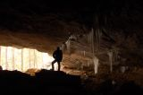
By Mary Reed, photos by Attila Horvath
Eastern Kentucky’s Carter Caves State Resort Park is a twofer: a quality below-ground and above-ground destination all in one.
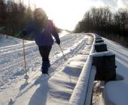
By Mary Reed
Ever dream of closing the roads to motorists to allow for car-free outdoor adventure?
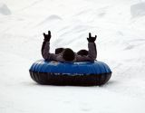
By Jon Ebel
At first glance, Boyce Park seems like your average county park with tennis courts, an archery range and a wave pool.
By Mary Reed
Hit the slopes at Canaan Valley Resort and enjoy the view of the East’s biggest alpine valley (13 by 3 miles), nestled at 3,200 feet, with surrounding mountains rising above 4,200 feet.
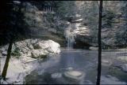
By Mary Reed
Hocking Hills State Park, home to the famous Old Man’s Cave, is truly a four-season destination, but the 2.5 million annual visitors mostly come in a summer crush.
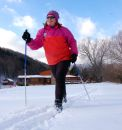
By Mary Reed, photos by Attila Horvath
Glide into your next winter adventure at Elk River Touring Center, a cross-country ski destination that has that rare combination of top-end outdoor adventure access, quality infrastructure and afford
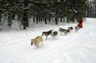
By Mary Reed
Live out your Iditarod dreams without leaving the Ohio Valley by heading over to Husky Power Dogsledding near Deep Creek Lake, MD, where you can get a chance to run a team of eager dogs through 600-pl